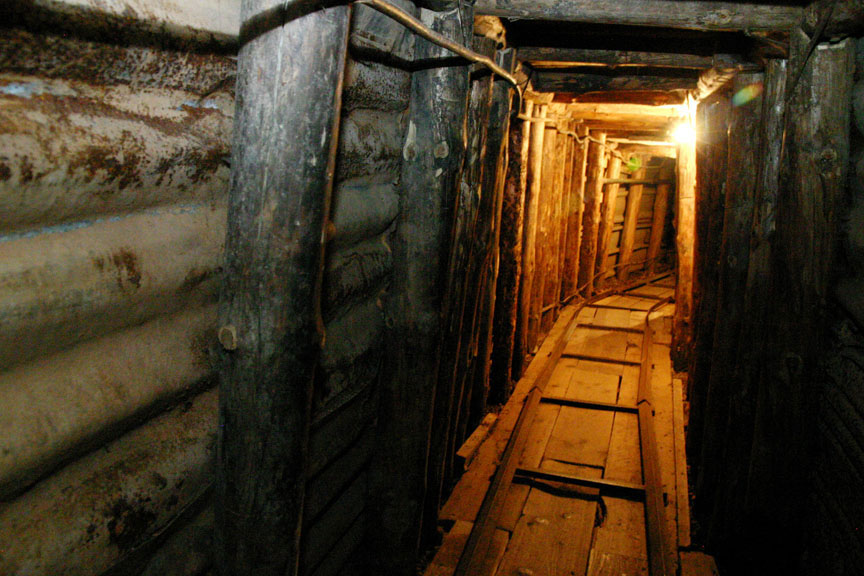
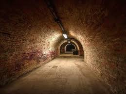
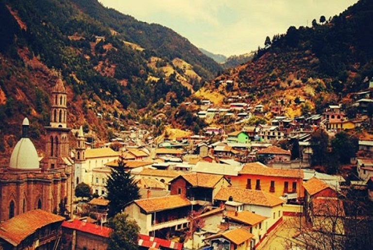
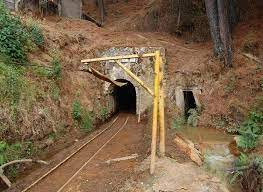

En Angangueo Michoacán
Este es otro sitio que no puedes dejar de conocer, una veta descubierta en 1792, de 9.50 metros de profundidad y con una longitud aproximada de 100 metros. En este impresionante espacio, que recrea las antiguas minas de Angangeo, podrás conocer las herramientas y vestimentas utilizadas en la industria minera. El túnel inicia en la Casa Parker y concluye en el Templo de la Concepción.




"Visita Michoacán"
"Visita Angangueo"
"Visita El Tunel San Simón"